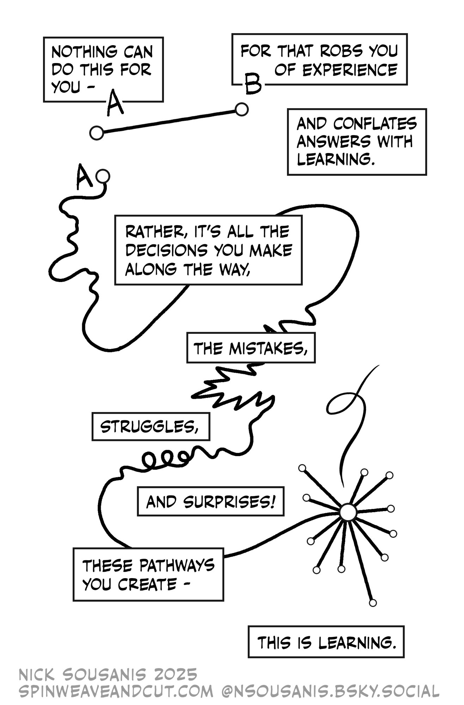

General Course Information
This semester, I have two sections of MTH 202. It’s helpful (especially early in the semester) if you tell me your section in any communications with me. You should also include that information on any papers that you hand in.
- Section A
- MWF 8:10-9:35, DB 230
R 8:10-9:35, Franz 025
- MWF 8:10-9:35, DB 230
- Section B
- MWF 11:25-12:20, Franz 234
R 12:55-1:50, Franz 026
- MWF 11:25-12:20, Franz 234
Instructor
Chris Hallstrom, PhD
(he/him)
Students sometimes ask how they should address me. While I won’t be offended if you use my first name, I know that many students aren’t comfortable doing so. I also recognize that I have some amount of privilege in this regard and that many of my colleagues would find it disrespecful or presumptuous to use first names. In solidarity with them I’d suggest that you call me “Dr. Hallstrom” or “Prof. Hallstrom”.
- What Should I Call My Professor Flow Chart
- “My First Name” by Susan Harlan, The South Carolina Review, 2017 (49.2)
- “Tenure, She Wrote”
- Gender Bias in Course Evaluations
{kind=link}
Contact Information
Email is a very effective way to communicate with me. If you send me email after 5pm, however, there’s a good chance that I will not see it until the following morning. Similarly, I don’t check my email regularly on weekends so you might not get a reply until Monday. I will do my best to respond as soon as I am able, but if you haven’t heard back from me in a timely manner - please feel free to follow-up!
You can also reach me via my office phone: 503-943-7165.
Office
My office is located in Buckley Center 270 – located on the second floor of the NW wing. While I do have specific times set aside for drop-in hours, you are always welcome to stop by at anytime!
Course Materials
Textbook
We will be using the open source textbook Active Caclulus Single Variable, 2nd Edition by Matthew Boelkins, et al. 2025. This is a free, open-source text available in both online (HTML) and PDF versions:
I recommend that you use the online version as it will give you access to interactive problems embedded in the text. Note that this text covers both Calc I and Calc II material – we will focus on Chapters 5-8.
While a print version of the 2nd edition is not yet available, there’s no difference between the 1st and 2nd editions for Chapters 5-7, so if you really want a print version, the 1st edition would be fine. To be clear – you do not need a print copy - I mention it just because some students like to have a hard copy of the text. You can order a print version here for about $25 which covers the cost of printing.
Workbook
All of the activities from the textbook can also be found bundled in an Activites Workbook for chapters 5-8:
[AW]: Active Calculus Activities Workbook, chs 5-8, 2nd Ed.
These activities are the same as what you’ll find in the textbook, but are formatted with additional white space to make it easier to write and organize your work. It’s not at all necessary that you print these out yourself – but they’re here if you think that might be useful.
All additional handouts or course materials will be posted on our class Moodle page. I will also regularly post a summary of our class activities so if you ever miss class for any reason, you can check there to see what you missed.
Technology
I expect that everyone has access to a desktop computer, laptop, or tablet device. We will make use of the online graphing tool Desmos so if you don’t already have a free Desmos account, I recommend that you sign up for one. It’s not absolutely necessary, but it does allow you to save your work, which is nice. In class, we will often be working in small groups so it’s not necessary for everyone to bring a device to class, but you’ll want to be able to use it outside of class. Note that if you already have a graphing calculator, you may find that useful, but my experience is that Desmos is the better tool for our needs.
From time to time, we may also make use of online tools such as Wolfram Alpha for certain calculations. We will discuss in class when such tools are approprate. Note that GenAI tools such as ChatGPT are not appropriate for doing mathematics. Again, we will discuss why this is throughout the semester.
Finally, if you need any assistance getting access to technology, please let me know!
AI Policy
Using AI tools such as ChatGPT on homework or other submitted work fundamentally undermines our learning goals and will be considered a violation of UP’s academic integrity policy. If I see work that I suspect may have been produced by or with the help of AI tools we will have a conversation about it. Note that I am obligated to share any concerns around academic integrity with the Dean of Students.
In addition to work you turn in I strongly suggest, for the reasons articulated below, that you don’t use AI tools in any other capacity for this class.
These AI policies apply only to this course. For your other courses, please follow those professors’ AI policies, which may differ from mine.
Generative AI tools such as ChatGPT work by predicting what words will form coherent sentences in the context of the prompt you’ve given it, essentially “autocomplete in overdrive”. Gen AI tools have been described as Bullshit Machines meaning that they are designed to produce output that sounds convincing without any regard to whether its output is actually correct.
This also means that they are not actually doing any mathematics. If ChatGPT can do most of your calculus problems its because it was trained on thousands of calculus textbooks (without the author’s permission). This also means that there’s absolutely no promise that any answers you get from generative AI are correct.
I often hear students say that they use AI as a “study aid” to do things like help explain concepts, to summarize content, or to check their work.
Here’s the thing – those are all skills that you are here (both in this class and at UP) to develop! Struggling to build your own understanding - to make sense of difficult concepts - is the whole point. Using Gen AI to do these tasks for you, you are giving up opportunities to learn. Don’t undermine your growth as a human learner by looking for shortcuts.
And don’t forget the part where there’s no guarantee that anything an AI chatbot tells you is correct!

Fundamentally, I believe that the use of AI tools in this class ultimately gets in the way of authentic learning.
Beyond their use in this class, there are many other reasons why you might be critical about the use of AI tools in general, many of which of are touched upon in this passage from Anthony Moser’s essay “I Am An AI Hater.”
Critics have … written thoroughly about the environmental harms, the reinforcement of bias and generation of racist output, the cognitive harms and AI supported suicides, the problems with consent and copyright, the way AI tech companies further the patterns of empire, how it’s a con that enables fraud and disinformation and harassment and surveillance, the exploitation of workers, as an excuse to fire workers and de-skill work, how they don’t actually reason and probability and association are inadequate to the goal of intelligence, how people think it makes them faster when it makes them slower, how it is inherently mediocre and fundamentally conservative, how it is at its core a fascist technology rooted in the ideology of supremacy, defined not by its technical features but by its political ones.
Collaboration
Unless otherwise instructed, I encourage you to work together with classmates on homework or other assignments, although any work that you hand in (unless it’s specified as a group assignment) should be your own. Unless otherwise instructed, all check-ins should be done individually.
Late work & extensions
Due dates for assignments are there to give you structure and to help you keep up with the course material. They also help me provide you with feedback in a timely manner. That said, I understand that things come up periodically that can make it difficult to complete an assignment by the deadline. Life happens!
If something comes up that prevents you from completing an assignment by the posted due date, just send me email and let me know when I can expect your work. You do not need to provide an explanation. In general, I will expect to receive your work within one week.
There are, however, two hard deadlines to be aware of: Oct. 11th (Friday before Fall break) and Dec. 6th (last day of classes). Except in unusual circumstances or by prior arrangement, I will not accept work after those dates.
Important dates
- Mon, Aug. 25: Classes begin
- Fri, Aug. 29: Last day to add/drop
- Mon, Sep. 1: Labor Day – classes in session, offices closed
- Mon-Fri, Oct. 13-17: Fall Break
- Mon, Nov 24: Last day to Withdraw
- Thur-Fri, Nov 27-28: Thanksgiving
- Fri, Dec 5: Last day of classes
- Mon, Dec 8: Section B final check-in, 1:30-3:30
- Tue, Dec 9: Section A final check-in, 1:30-3:30